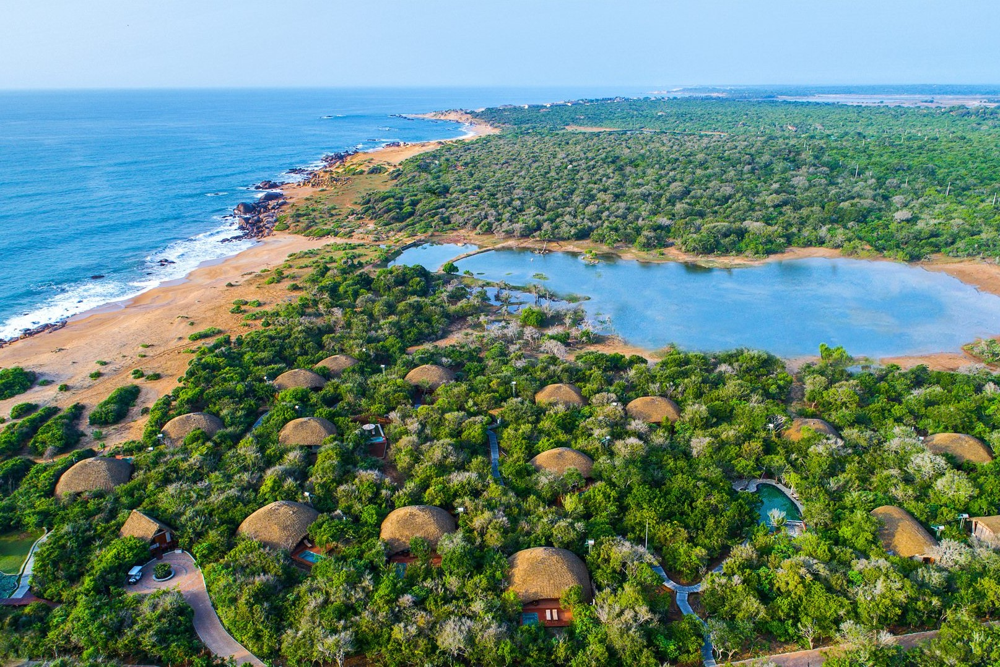
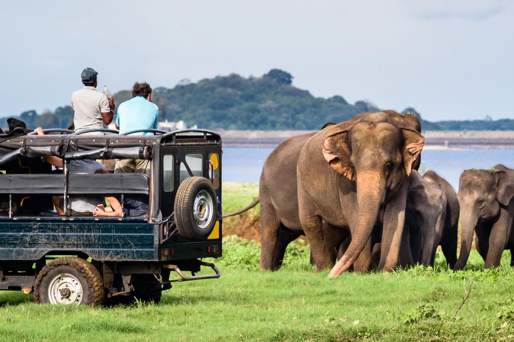
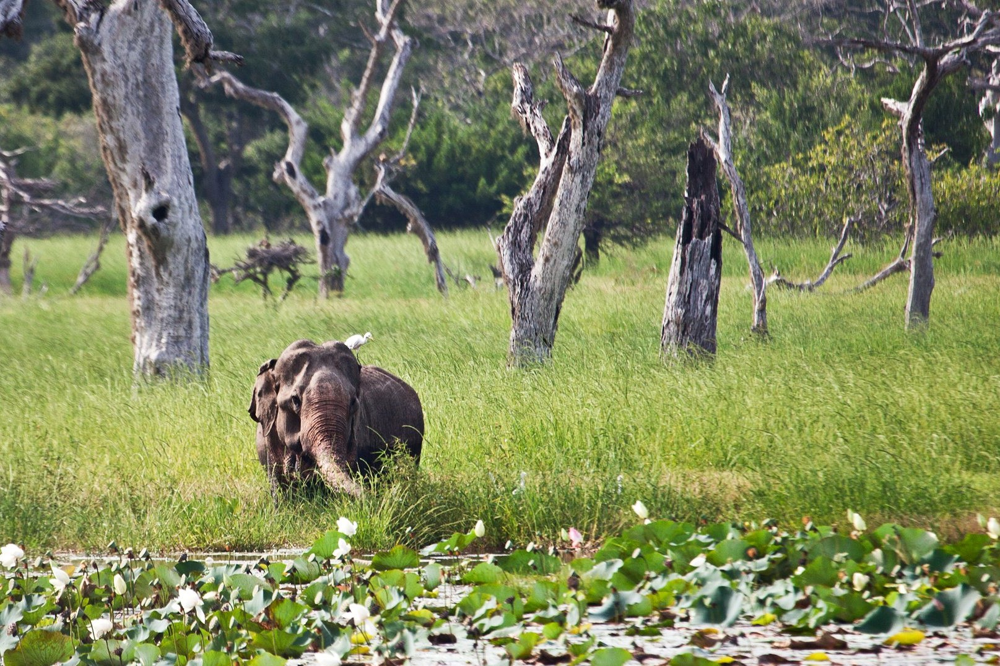
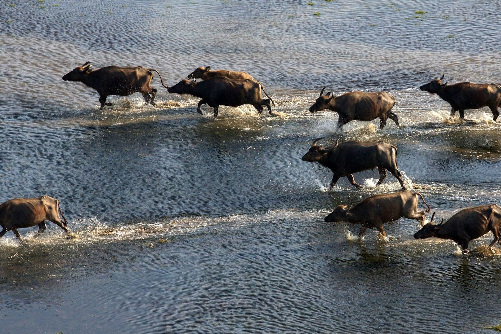
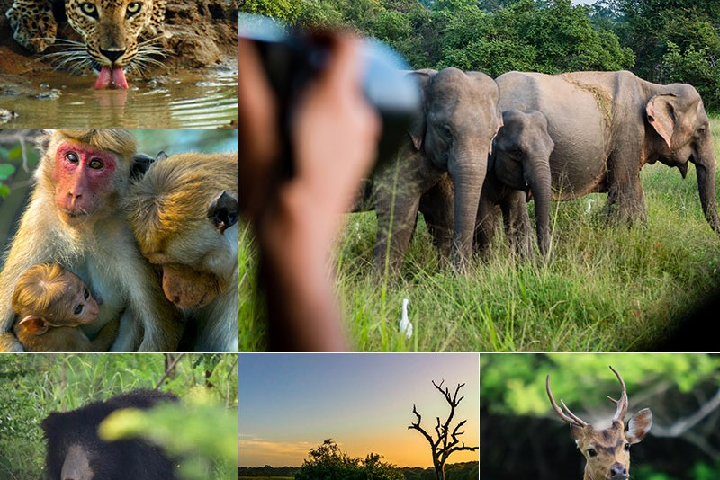

1 / 6

Entrance of the Yala National Park
2 / 6

Top View of the Yala National Park
3 / 6

Inside the Yala National Park
4 / 6

Inside the Yala National Park
5 / 6

Inside the Yala National Park
6 / 6

Inside the Yala National Park